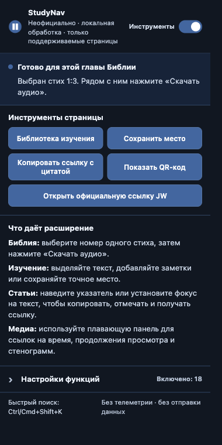
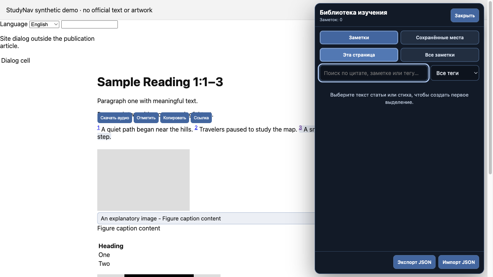
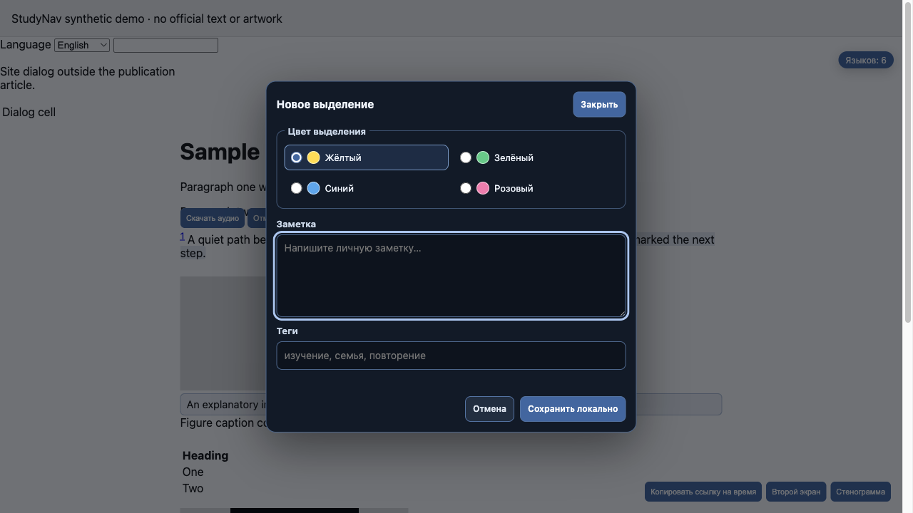
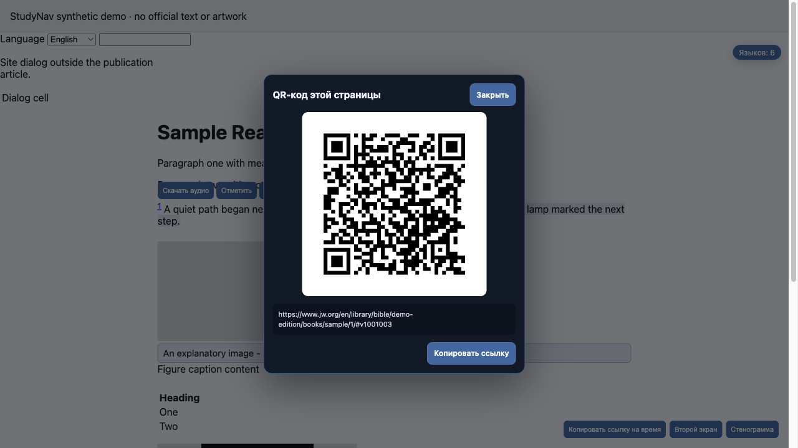

1
Изучить абзац
Выделите текст, выберите один из четырёх цветов, при желании добавьте личную заметку и теги, а позже найдите запись в библиотеке изучения.
Версия 1.4 · локальная работа · русский + английский
StudyNav добавляет на поддерживаемые публичные страницы JW.org подсветки, заметки, сохранённые места, точные ссылки, аудио одного стиха и медиа-инструменты. Личные данные для изучения остаются в браузере.

Неофициальный проект. StudyNav не выпускается, не поддерживается и не одобряется Свидетелями Иеговы. На всех скриншотах и в обучении используется явно обозначенный синтетический макет — без официального текста публикаций, иллюстраций, логотипа и дизайна страниц.
Полный обзор
Ролик по главам показывает все 22 настройки. Каждая сцена называет функцию, демонстрирует результат на синтетическом макете и сразу переходит дальше.
С чего начать
Окно расширения показывает, что доступно на текущей странице. Дополнительные переключатели не мешают, пока не понадобятся.
Выделите текст, выберите один из четырёх цветов, при желании добавьте личную заметку и теги, а позже найдите запись в библиотеке изучения.
Сохраните страницу, абзац или выбранный стих. Места хранятся локально, ищутся, удаляются и входят в резервную копию JSON.
Выберите номер стиха и нажмите Скачать аудио. StudyNav локально обрежет официальное аудио главы и сохранит только этот стих в WAV.
Управляйте с клавиатуры, копируйте ссылку со временем, продолжайте просмотр вручную, открывайте второй экран и ищите в транскрипте.
Скопируйте оформленную цитату, ссылку на абзац или видимый локальный QR-код.
Скачивание картинок и три функции изменения разметки выключены по умолчанию. В WOL изменения разметки всегда подавляются.
Закладки на страницу, абзац и стих с точными адресами, поиском, удалением и объединяющим импортом JSON.
Название расширения, окно, встроенные кнопки, редакторы, диалоги, ошибки и подписи доступности следуют языку браузера.
Справочник
Главный переключатель отключает все элементы StudyNav. Отдельные настройки находятся в разделе Настройки функций. «Вкл.» означает, что функция ждёт подходящую страницу или действие пользователя и сама по себе ничего не меняет.
Ничего не найдено.
| Функция | Что делает | По умолчанию |
|---|---|---|
| Выделения, заметки и теги | Четыре цвета CSS-подсветки, локальные заметки, теги, поиск, изменение, удаление и точная повторная привязка. | Вкл. |
| Сохранённые места | Сохраняет и открывает точные страницы, абзацы и стихи. Поиск и удаление — в библиотеке изучения. | Вкл. |
| Копировать оформленные цитаты | Копирует выделенный текст, выбранный стих или заголовок страницы с точной проверенной HTTPS-ссылкой. | Вкл. |
| Показать QR-код страницы | Создаёт QR-код точной ссылки локально; запрос к сервису QR не отправляется. | Вкл. |
| Открыть официальную ссылку JW | Строит адрес Finder только при наличии корректных метаданных публикации на странице. | Вкл. |
| Функция | Что делает | По умолчанию |
|---|---|---|
| Скачать аудио стиха | После выбора номера стиха локально сохраняет только его озвучку в PCM WAV. | Вкл. |
| Копировать текст | Копирует абзац или стих без подписей и кнопок StudyNav. | Вкл. |
| Копировать ссылку на абзац | Копирует прямую ссылку на якорь абзаца или стиха. | Вкл. |
| Быстрый поиск публикаций | Ctrl/Cmd+Shift+K открывает поиск по поддерживаемой мнемонике или номеру документа. | Вкл. |
| Описания изображений | Показывает существующий alt-текст и подпись подходящего изображения. | Вкл. |
| Скачивать изображения статей | Добавляет компактную смысловую кнопку рядом с подходящими изображениями. | Выкл. |
| Доступные языки | Показывает количество реальных вариантов языка, предоставленных страницей. | Вкл. |
| Функция | Что делает | По умолчанию |
|---|---|---|
| Закрепить шапку страницы | Применяет узкое правило sticky только к поддерживаемым статьям JW.org. | Выкл. |
| Расширить колонку чтения | Использует больше ширины для текста статьи, не затрагивая диалоги сайта. | Выкл. |
| Более ясные таблицы | Добавляет ограниченное разделение строк таблиц внутри корня поддерживаемой статьи. | Выкл. |
| Функция | Что делает | По умолчанию |
|---|---|---|
| Затемнять элементы плеера | Уменьшает заметность панели, пока на неё не наведён указатель или фокус. | Вкл. |
| Увеличенные субтитры | Увеличивает размер субтитров и контраст фона. | Вкл. |
| Управление медиа с клавиатуры | Space/K, J/L, F и M; поля ввода не перехватываются. | Вкл. |
| Копировать ссылку со временем | Копирует адрес медиа с текущим временем или неизменённый адрес страницы, если видео нет. | Вкл. |
| Продолжить просмотр | Хранит ограниченный прогресс локально и переходит к нему только после явного нажатия — без автовоспроизведения. | Вкл. |
| Открыть второй экран | Открывает текущий источник медиа в отдельном окне 960×540. | Вкл. |
| Поиск по транскрипту видео | Открывает, ищет и скачивает текст транскрипта, уже доступный на текущей странице. | Вкл. |
Интерфейс
Панели StudyNav фиксируются внутри окна, а подсветка не оборачивает и не переписывает текстовые узлы исходной страницы.



Граница данных
StudyNav не создаёт аккаунт, сервер, телеметрию и удалённую синхронизацию. Хранилище расширения — часть локального профиля браузера, а не зашифрованный сейф.
При удалении расширения его локальное хранилище обычно стирается. Перед переустановкой или переносом профиля используйте Экспорт JSON. Импорт только объединяет данные и не удаляет существующие корректные записи.
DOM и медиа-API JW.org могут меняться. StudyNav закрывается безопасно на неподдерживаемых адресах, убирает свои элементы при отключении и сохраняет исходную разметку WOL.
Исследование продукта
Для версии 1.4 сравнивались официальные сценарии JW Library, JW Web Add-on и JWPUBS Toolbox, узкие медиа-расширения и пользовательские скрипты. Добавлен только ясный локальный сценарий без лишнего шума.
Закладки JW Library могут указывать на статью или главу, абзац или стих. StudyNav переносит эту понятную модель на поддерживаемые веб-страницы, сохраняя записи локально и давая поиск.
Выделения, заметки, теги, резервная копия, точные ссылки, клавиши медиа, ссылки со временем, транскрипт, второй экран и явное продолжение просмотра уже закрывают главные повторяющиеся задачи.
Журнал посещений собирал бы больше поведения, чем нужно. Явные сохранённые места понятнее, меньше и полностью управляются пользователем.
Они расширяют разрешения, вопросы приватности, обработку контента и поддержку, но не усиливают точечное изучение на странице.
В JW Library уже есть зрелые плейлисты и обрезка. StudyNav оставляет узкую функцию одного стиха, которая нужна непосредственно во время чтения.
Аккаунты, модерация, конфликты синхронизации и сервер разрушили бы локальную границу. Заметки и теги остаются личными для профиля браузера.
Установка под контролем владельца
В этом варианте нет автоматических обновлений из магазина. Вы сами проверяете, собираете и перезагружаете код.
brave://extensions или chrome://extensions.packages/studynav/dist. После следующих сборок нажимайте «Обновить» на той же карточке и обновляйте открытые страницы.git clone --recurse-submodules https://github.com/kiku-jw/nick-extensions.git
cd nick-extensions
bun install --frozen-lockfile
bun run bootstrap:inkshade
bun run verifyТолько сборка StudyNav: bun scripts/build-extension.mjs studynav
Вопросы
Браузер может локально декодировать официальное аудио главы и создать предсказуемый PCM WAV. Кодировщик MP3 сильно увеличил бы размер и поверхность поддержки без существенной пользы.
Да. Версия 1.4 переводит название, окно, встроенные кнопки, панели изучения, диалоги, сообщения, ошибки и подписи доступности. Содержимое самой страницы остаётся на языке сайта.
Удалённой синхронизации нет. Экспортируйте JSON в одном профиле и импортируйте в другом. Импорт ограничен и только объединяет записи.
Они меняют геометрию исходной страницы. Режим по желанию снижает риск несовместимости, а в WOL StudyNav полностью подавляет эти изменения.